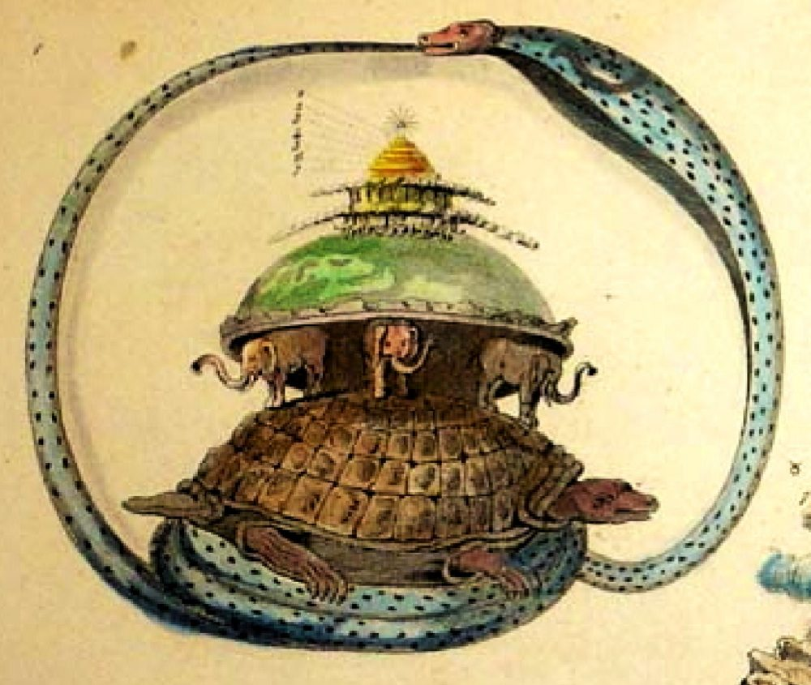

Chapter 8: Seeing India from Outside: Orientalism and Comparative Philosophy¶
“I have never found one among them who could deny that a single shelf of a good European library was worth the whole native literature of India and Arabia.”
— T. B. Macaulay, Minute on Indian Education, 2 February 1835
8.1 Why This History Matters¶
Every description of Indian traditions in English, including the one in this series, inherits categories formed in a long history of encounter: “Hinduism” as a religion with a scripture and a creed, “Indian philosophy” as six orthodox and three heterodox schools, “the Vedic age”, “the caste system”, “the spiritual East”. Some of these categories were coined by outsiders, some by Indians in conversation with outsiders, and most have been contested. A volume that compares Indian traditions with one another and with the thought of other civilisations must therefore look at how such comparisons were made in the past, by whom and for what purposes. This chapter tells that story from the Greek and Chinese visitors of antiquity to the scholarly debates about “Orientalism” at the end of the twentieth century. Table 8.1 gathers some of its landmarks, together with some Indian responses; it is selective, meant to show the pace and sequence of the encounter rather than to list every important work.
8.2 Before Europe¶
8.2.1 Greek and Chinese observers¶
Greek writers knew of India from the Persian empire and, after Alexander’s campaign in the Indus valley (327–325 BCE), from eyewitnesses. Megasthenes, ambassador of Seleucus to the court of Candragupta Maurya around 300 BCE, wrote an Indica that survives only in fragments quoted by later authors. He described the society he saw as divided into seven hereditary “classes” — philosophers, farmers, herdsmen, artisans, soldiers, overseers and councillors — a description that does not match the Brahmanical four varṇas and has puzzled historians ever since. Greek accounts of the “naked philosophers” (gymnosophistai) and of the Brahmins and śramaṇas reflect real encounters, and the sceptic Pyrrho, who accompanied Alexander, may have been influenced by what he heard in India, though how far is disputed (Thapar 2002).
Chinese Buddhist pilgrims came to India to find texts and visit holy places. Faxian (travelled c. 399–412), Xuanzang (in India c. 630–643) and Yijing (late seventh century) left detailed records of monasteries, kingdoms and customs. Xuanzang studied at Nālandā and returned to China with hundreds of texts, which he spent the rest of his life translating. His account remains one of the most important sources for the history of seventh-century India. These pilgrims came as students, not rulers, and their comparisons were between Indian Buddhism and the Buddhism they knew at home.
8.2.2 Al-Bīrūnī¶
The most remarkable pre-modern outside study of Indian thought was written by the Central Asian polymath Abū Rayḥān al-Bīrūnī (973–after 1048). Brought to India in the train of Maḥmūd of Ghazna, whose raids devastated temples and cities, al-Bīrūnī learned Sanskrit, translated Patañjali’s Yogasūtra and a Sāṃkhya text into Arabic, and wrote around 1030 a long book on the religion, philosophy, astronomy, calendars, law and customs of the Hindus, known in English as Alberuni’s India (Sachau 1888).
Al-Bīrūnī’s method was explicitly comparative. He set Indian doctrines beside those of the Greeks, the Sufis and the Christians, noting for example the resemblance between the Sāṃkhya and Platonic views of the soul. He distinguished carefully between the ideas of the learned and the beliefs of ordinary people, and he criticised the Purāṇic cosmography in the light of the Indian astronomers’ own spherical Earth (Chapter 2). He also recorded, with some exasperation, the Brahmins’ reluctance to share their knowledge with foreigners and their conviction that no other nation possessed science. He said frankly that the conquests of Maḥmūd had made Hindus hostile to all Muslims. His book is a model of informed, critical and respectful comparison, nearly eight centuries before the European Orientalists.
8.2.3 Persian translations at the Mughal court¶
The Mughal emperors sponsored an extraordinary programme of translation from Sanskrit into Persian. Under Akbar (r. 1556–1605) the Mahābhārata was translated as the Razmnāma (“Book of War”), and the Rāmāyaṇa, the Yogavāsiṣṭha and many other works followed. Akbar’s great-grandson Dārā Shikoh (1615–1659), whose comparison of Sufi and Vedāntic thought is described in Chapter 16, sponsored in 1657 the Sirr-i Akbar (“The Greatest Secret”), a Persian translation of some fifty Upaniṣads. Audrey Truschke and Supriya Gandhi have shown that these projects were serious intellectual undertakings in which Sanskrit pandits and Persian scholars collaborated (Truschke 2016; Gandhi 2020).
The Sirr-i Akbar had an unexpected European career. In 1801–02 the French scholar Abraham-Hyacinthe Anquetil-Duperron published a Latin translation of it as Oupnek’hat. This was the text through which Arthur Schopenhauer first read the Upaniṣads; in a famous passage of his Parerga and Paralipomena (1851) he called it the consolation of his life and of his death. The first major European encounter with Vedānta thus came through a Mughal prince’s Persian.
8.3 Early Modern Europeans and Their Informants¶
The first sustained European engagement with Indian knowledge came not from philosophers but from physicians, missionaries and merchants of the Portuguese and Dutch empires, and it depended at every step on Indian informants. Garcia da Orta, a Portuguese physician of Jewish descent in Goa, published there in 1563 his Colóquios dos simples e drogas da Índia, a series of dialogues on Indian drugs and spices that drew on conversations with local practitioners and corrected many errors of the classical European authorities. The Dutch governor of Malabar, Hendrik van Rheede, organised the compilation of the Hortus Malabaricus (twelve volumes, Amsterdam, 1678–1693), a botanical survey of the plants of Kerala with their uses, prepared with the help of the Ezhava physician Itty Achuden and several Konkani Brahmin physicians, whose knowledge is acknowledged in the work itself. Richard Grove has argued that such works, built on Indian ecological and medical knowledge, contributed to the development of European botany and even of early conservation thinking (Grove 1995).
Missionaries learned Indian languages in order to preach, and in doing so produced grammars, dictionaries and literature. The English Jesuit Thomas Stephens composed the Kristapurāṇa (1616), a retelling of the Bible in the form of a Marathi Purāṇa; Roberto de Nobili in Madurai wrote in Tamil and studied Sanskrit (Chapter 16). The Dutch Protestant minister Abraham Rogerius published in 1651 an account of the religion of the Brahmins of the Coromandel coast based on conversations with a Brahmin informant. These works were shaped by the purposes of conversion and trade, but they mark the beginning of European study of Indian knowledge as something to be learned from Indians.
8.4 The British Orientalists¶
8.4.1 Knowledge for government¶
When the East India Company became a territorial power in Bengal after 1765, its officials needed to know the laws by which their subjects lived. Warren Hastings, Governor of Bengal from 1772 and Governor-General under the Regulating Act of 1773, decided that Hindus and Muslims should be governed by their own laws, which meant identifying and translating the relevant texts. Pandits were commissioned to compile a digest of Hindu law, translated from a Persian version into English by Nathaniel Halhed as A Code of Gentoo Laws (1776). Charles Wilkins published the first English translation of the Bhagavadgītā in 1785, with a preface by Hastings predicting that such works would survive when the British dominion in India had long ceased to exist. Bernard Cohn has analysed how these projects turned Indian knowledge into an instrument of colonial administration, and how, in the process, a few texts such as the Manusmṛti were elevated into authoritative “codes” in a way they had rarely been before (Cohn 1996).
8.4.2 William Jones and the Asiatic Society¶
Sir William Jones (1746–1794), a judge of the Supreme Court in Calcutta and a gifted linguist, founded the Asiatic Society of Bengal in 1784. Two years later, in his “Third Anniversary Discourse” to the Society, he praised Sanskrit as “of a wonderful structure” and argued that its affinity with Greek and Latin was too strong to be accidental: all three, with Gothic, Celtic and probably Persian, had “sprung from some common source, which, perhaps, no longer exists”. The linguistic consequences of that remark — comparative philology and the Indo-European family — are traced in Volume 10 (Śabda Vidyā). For the history of comparison, what matters is its form. Jones set an Indian language beside the two classical languages on which European education rested and pronounced it their equal or better; the comparison flattered Indians and Europeans alike, and it established kinship, not derivation, as the model for relating India to Europe. Others had noticed some of the resemblances before, but Jones’s prestige and his institution gave the idea its impetus. He also translated Kālidāsa’s Śakuntalā (1789), whose reception in Germany was enthusiastic, and the Manusmṛti (1794), so that a literary masterpiece and a law-book became, side by side, the first “Indian classics” known to Europe. Henry Thomas Colebrooke (1765–1837) followed with careful studies of the Vedas, of Hindu law and of the systems of Indian philosophy, and his essays “On the Philosophy of the Hindus” (1823–27) were for decades the standard European account (Trautmann 1997).
Thomas Trautmann has argued that these men, whatever their colonial purposes, were genuine scholars who admired what they studied and who worked closely with Indian pandits, and that their project should be distinguished from the hostile “Anglicism” that followed (Trautmann 1997). Their admiration was real; so was the asymmetry of power within which it operated.
8.4.3 Images of India¶
European knowledge of India was shaped by pictures as well as texts. The uncle and nephew Thomas and William Daniell travelled through India between 1786 and 1794 and published Oriental Scenery (1795–1808), a series of aquatints of temples, mosques, ruins and landscapes that fixed for British viewers an image of India as a land of picturesque antiquity. Company officials commissioned Indian artists to paint plants, birds, castes and occupations in a hybrid style now called “Company painting”, which combined Indian techniques with European conventions of natural-history illustration. Photography arrived in the 1840s and was used from the 1850s to document monuments and, more troublingly, to compile ethnographic surveys of “types” of Indian people, such as the eight volumes of The People of India (1868–1875). These images, like the texts discussed in this chapter, were produced by collaboration between European patrons and Indian artists and informants, and they served both curiosity and government. Partha Mitter has traced the European reception of Indian art from the early travellers’ horror at “monsters” to the later Romantic admiration (Chapter 21) (Mitter 1977).
8.4.4 Mill, Macaulay and the turn against India¶
In 1817 James Mill, who never visited India, published The History of British India, which devoted hundreds of pages to proving that Hindu civilisation was primitive and that the Orientalists’ admiration for it was misplaced (Mill 1817). The book became a textbook for Company officials. In 1835 Thomas Babington Macaulay, a member of the Governor-General’s council, wrote the Minute on Indian Education quoted at the head of this chapter, arguing that government funds should support English education rather than Sanskrit and Arabic learning, in order to create “a class of persons, Indian in blood and colour, but English in taste, in opinions, in morals, and in intellect”. The English Education Act of the same year adopted his policy. The Anglicist victory shaped Indian education for the next century and is the background to much of the modern Indian resentment of colonial attitudes to Indian knowledge, discussed in Chapter 22.
8.4.5 Counting and classifying: the census and the surveys¶
Colonial knowledge of India was produced not only by scholars of Sanskrit and Persian but by an apparatus of surveys. The Great Trigonometrical Survey, begun in 1802, mapped the subcontinent; the Archaeological Survey of India, established in 1861 under Alexander Cunningham, recorded and later excavated monuments; district gazetteers described the land, crops, castes and customs of each region; and George Grierson’s Linguistic Survey of India (published 1903–1928) classified hundreds of languages and dialects. The decennial census, conducted throughout British India from 1881 after a less complete enumeration in 1871–72, required every person to be assigned a religion and a caste.
Bernard Cohn and Nicholas Dirks have argued that these exercises did not simply record Indian society but helped to reshape it (Cohn 1996; Dirks 2001). The census made religious communities countable, and so made their relative size a political issue; it turned fluid and locally varying caste identities into fixed categories with all-India names. When the Census Commissioner Herbert Risley attempted in 1901 to rank castes in an order of social precedence — having earlier, in Bengal, tried to correlate caste with physical measurements of the nose and skull — castes across India petitioned to be recorded under higher names, and caste associations formed to press their claims. The classifications of the colonial state thus entered the self-understanding of the people classified. The argument has been criticised for overstating the novelty of colonial categories — caste and religious identity were real before the British counted them — but it has made scholars attentive to the ways in which knowledge and government were intertwined. C. A. Bayly added a further qualification: the Company’s “information order” was built on Indian foundations — the newswriters, runners, clerks (munshī) and pandits of the Mughal and regional states — and British knowledge was weakest, as in the rebellion of 1857, where it had lost touch with these Indian networks (Bayly 1996).
8.5 The Reverse Gaze: Indians in Europe¶
Europeans were not the only observers. From the late eighteenth century Indians travelled to Britain and wrote about what they saw, and their accounts are a valuable counterweight to the European descriptions of India. Sake Dean Mahomed (1759–1851), from Patna, served in the East India Company’s army, emigrated to Ireland and then England, and published The Travels of Dean Mahomet (1794), the first book written in English by an Indian; he later opened an Indian restaurant in London (1810) and a celebrated “shampooing” bath-house at Brighton. Mirza Abu Taleb Khan, a Persian-writing official from Lucknow, travelled in Britain and Europe between 1799 and 1803 and wrote a Persian account of his journey, admiring British science and public institutions while criticising the pride, irreligion and materialism of the English. Rammohun Roy visited England in 1831 as the envoy of the Mughal emperor, gave evidence to Parliament on the government of India, and died at Bristol in 1833.
In the later nineteenth century the stream of Indian visitors became a flood of students, lawyers, reformers and religious teachers — Gandhi among them — and Indian writers produced a substantial literature of travel and comparison in English, Bengali, Marathi, Urdu and other languages. Tapan Raychaudhuri’s study of Bengali intellectuals’ perceptions of the West shows how their admiration for Western science, literature and liberty coexisted with criticism of its materialism, racism and imperialism, and how the West became for them both a model and a foil (Raychaudhuri 1988). The “spiritual East” contrasted with the “materialist West” was in part an Indian construction, formed in the experience of colonised travellers who found Europe powerful but not admirable in every respect. Recognising this reverse gaze is a necessary part of a comparative history: Orientalism was a two-way conversation, even if the two parties did not speak with equal power.
8.6 Germany, Romanticism and Philosophy¶
India had a different meaning in Germany, which had no Indian empire. Herder imagined India as the cradle of humanity. Friedrich Schlegel’s Über die Sprache und Weisheit der Indier (“On the Language and Wisdom of the Indians”, 1808) made India the source of European language and religion; his brother August Wilhelm became the first professor of Sanskrit in Germany. Raymond Schwab called this enthusiasm an “Oriental Renaissance”, comparable to the Renaissance rediscovery of Greece (Schwab 1984).
The philosophers were more divided. Hegel, in his lectures on the philosophy of history and of religion, placed India at an early stage of the development of Spirit: a world of dreaming imagination, without history, without the consciousness of individual freedom and without philosophy in the strict sense. Halbfass has shown in detail how Hegel’s judgement, based on wide reading of the available translations, set the terms for the exclusion of India from the history of philosophy as taught in European universities (Halbfass 1988). Schopenhauer, by contrast, saw in the Upaniṣads and in Buddhism confirmations of his own philosophy of the will and of the denial of the will. Nietzsche admired the Manusmṛti as an aristocratic law-code superior to Christianity; European enthusiasm for India was not always for what modern Indians would wish to be admired.
Friedrich Max Müller (1823–1900), a German who spent his career at Oxford, edited the Ṛgveda with Sāyaṇa’s commentary (1849–74) and directed the fifty volumes of The Sacred Books of the East (1879–1910), which made translations of Indian, Chinese and Iranian scriptures widely available (Müller 1879–1910). Paul Deussen’s Sechzig Upanishad’s des Veda (1897) and his systematic studies of Vedānta treated Indian thought as philosophy. Max Müller’s enthusiasm for the “Aryan” heritage and his conviction that the Vedas were the childhood of religion also illustrate the limits of the age: the texts were valued largely as evidence for European origins.
Max Müller never visited India, but he exercised a large influence there. In lectures delivered at Cambridge in 1882 to candidates for the Indian Civil Service, published as India: What Can It Teach Us? (1883), he urged the young administrators to regard the people they would govern with respect, praised the Sanskrit literature as a key to the history of the human mind, and attacked the prejudice that Indians were naturally untruthful. Indian reformers read the lectures with gratitude, and Vivekananda visited him at Oxford in 1896 (Chapter 10). His statement that he would point to India if asked where the human mind had most fully developed some of its choicest gifts is among the most quoted sentences in Indian writing about India; it is usually quoted without the context of his argument, which concerned the value of Sanskrit studies for Europeans. Max Müller’s career thus shows both the generosity and the limits of the Orientalist perspective: admiration was real, but it was admiration for an ancient, textual India, and it was addressed above all to Europe.
8.7 India in American Thought¶
Indian texts reached North America through British translations and German scholarship. The Transcendentalists of New England read them avidly. Ralph Waldo Emerson’s poem “Brahma” (1857), which begins “If the red slayer think he slays, / Or if the slain think he is slain”, paraphrases a passage of the Kaṭha Upaniṣad and the Gītā (2.19); Henry David Thoreau took the Gītā with him to Walden Pond and wrote that he bathed his intellect in its philosophy every morning. Walt Whitman’s Leaves of Grass was later compared by Indian and Western readers to Vedāntic poetry, though his direct knowledge of Indian texts seems to have been slight. These writers read India through the lens of their own Romantic idealism, as the Germans had done; their enthusiasm prepared the ground for the reception of Vivekananda (Chapter 10) and, through Thoreau’s essay on civil disobedience, which Gandhi read, travelled back to India in a new form. The circulation of ideas between India and America is a striking example of how comparisons are made and remade in both directions.
8.8 Aryans, Race and Philology¶
The discovery of the Indo-European language family led, in the course of the nineteenth century, to theories of an “Aryan race” that had spread from a common homeland. In Europe these theories fed racial nationalism and eventually Nazi ideology, which appropriated the word “Aryan” and the svastika. In India they were taken up in contradictory ways. Some British writers used them to claim kinship with upper-caste Indians while justifying rule over others; B. G. Tilak argued in The Arctic Home in the Vedas (1903) that the Aryans had originated near the North Pole; Jotirao Phule turned the theory against the Brahmins, describing them as Aryan invaders who had enslaved the indigenous people (Chapter 14). Thomas Trautmann’s Aryans and British India traces this tangled history (Trautmann 1997). The linguistic and archaeological questions about the spread of Indo-Aryan languages into South Asia are discussed in Volume 1; the point here is that a philological discovery acquired racial and political meanings that its originators did not foresee.
8.9 Sociology: Weber and Dumont¶
In the early twentieth century, India became a test case for the new sociology of religion. Max Weber, in The Religion of India (first published in German in 1916–17), asked why modern rational capitalism had developed in the Protestant West and not in India. His answer stressed the combination of caste and the doctrine of karma: caste fixed people in hereditary occupations and ritual relations, and karma gave them a religious motive to accept their station and to seek salvation either through ritual conformity or through mystical withdrawal from the world, rather than through the methodical transformation of the world that he associated with Puritanism (Weber 1958). Weber’s analysis was learned and influential, and it identified real features of the Brahmanical texts. It has also been criticised: historians have pointed to the commercial sophistication of Indian merchant communities, Jain and Hindu, whose ethic of thrift and trust Weber himself noted; to the importance of colonial policy in India’s economic history; and to the danger of deriving the behaviour of a whole society from its religious texts.
Louis Dumont’s Homo Hierarchicus (1966; English translation 1970, revised 1980) took a different approach, analysing caste as a system governed by the opposition of the pure and the impure, in which status is separated from and superior to power, and contrasting the “hierarchical” ideology of India with the “individualist” ideology of the modern West (Dumont 1980). Dumont’s work dominated the anthropology of India for a generation and was then criticised for its reliance on Brahmanical texts, its neglect of power and conflict, and its tendency to treat India as the opposite of the West. Both Weber and Dumont illustrate the attraction, and the risk, of comparing civilisations as wholes.
8.10 Theosophy and the “Mystic East”¶
A different image of India was popularised by the Theosophical Society, founded in New York in 1875 by Helena Petrovna Blavatsky and Henry Steel Olcott, and moved to Adyar, near Madras, in 1882. Theosophy presented India and Tibet as the home of an ancient esoteric wisdom, preserved by hidden masters, that underlay all religions. Its leaders took an active part in Indian public life — Annie Besant founded the Central Hindu College at Banaras and became president of the Indian National Congress in 1917 — and Theosophy helped to restore the self-confidence of many educated Hindus and Buddhists. It also spread a picture of the “mystic East” that was largely a European projection (Figure 8.1). Richard King has analysed how this picture, together with modern Western notions of “mysticism” and “religion”, shaped both Western and Indian accounts of Indian traditions (King 1999). J. J. Clarke’s Oriental Enlightenment surveys the many uses to which Western thinkers, from Leibniz to the counterculture of the 1960s, have put Asian thought, often as a mirror in which to see their own concerns (Clarke 1997).


| Date | Event |
|---|---|
| 1563 | Garcia da Orta, Colóquios dos simples e drogas da Índia (Goa) |
| 1657 | Dārā Shikoh’s Persian translation of fifty Upaniṣads |
| 1678–1693 | Hortus Malabaricus, with the help of Kerala physicians |
| 1784 | Asiatic Society founded in Calcutta by William Jones |
| 1785 | Charles Wilkins’s English Bhagavadgītā |
| 1786 | Jones’s “third anniversary discourse” on the kinship of Sanskrit, Greek and Latin |
| 1789 | Jones’s English Śakuntalā |
| 1801–1802 | Anquetil-Duperron’s Latin Oupnek’hat, from Dārā’s Persian |
| 1808 | Friedrich Schlegel, On the Language and Wisdom of the Indians |
| 1817 | James Mill, The History of British India |
| 1835 | Macaulay’s Minute on Indian Education |
| 1837 | James Prinsep deciphers Brāhmī; Aśoka’s edicts become legible |
| 1849–1874 | Max Müller’s edition of the Ṛgveda with Sāyaṇa’s commentary |
| 1861 | Archaeological Survey of India under Alexander Cunningham |
| 1875 | Theosophical Society founded in New York; moves to Adyar, Madras (1882) |
| 1879–1910 | The Sacred Books of the East, edited by Max Müller |
| 1893 | World’s Parliament of Religions, Chicago |
| 1917 | Bhandarkar Oriental Research Institute, Pune |
| 1919–1966 | Critical edition of the Mahābhārata, Pune |
| 1939 | First East–West Philosophers’ Conference, Honolulu |
| 1978 | Edward Said, Orientalism |
| 1988 | Wilhelm Halbfass, India and Europe |
8.11 Said, Inden and the Critique of Orientalism¶
8.11.1 The critique¶
In 1978 Edward Said’s Orientalism argued that Western scholarship about the “Orient” had not been a neutral pursuit of knowledge but a discourse bound up with imperial power, which constructed the Orient as the West’s static, irrational and feminine other (Said 1978). Said wrote mainly about the Arab world, but his argument was soon applied to India. Ronald Inden’s Imagining India (1990) argued that the dominant Western images of India — as a land of caste, of the self-sufficient village, of divine kingship and of otherworldly religion — were “essentialisms” that denied Indians their agency as makers of their own history (Inden 1990). Sheldon Pollock, in an essay provocatively titled “Deep Orientalism?”, pointed out that the relationship between knowledge and domination in India did not begin with the British: Sanskrit learning, including the Dharmaśāstra, had long served to legitimate the power of Brahmins and kings over others (Pollock 1993). A volume edited by Carol Breckenridge and Peter van der Veer collected many of these debates (Breckenridge and van der Veer 1993).
Richard King extended the critique to the very idea of “Hinduism” and of “mysticism” (King 1999). Several scholars argued that “Hinduism” as a single religion was a nineteenth-century construction, produced by colonial census-takers, Orientalist scholars and Indian reformers, out of a great variety of sects and practices; Heinrich von Stietencron called the term “deceptive” (Sontheimer and Kulke 1989).
8.11.2 Critiques of the critique¶
These arguments have themselves been criticised, and the debate is instructive for anyone engaged in comparison. First, the critique of Orientalism risked repeating the error it denounced, by treating “Orientalism” as a single, all-powerful discourse and the colonised as its passive objects. Indian pandits, munshis and scholars were active participants in the production of colonial knowledge, with their own interests and traditions of learning. Second, David Lorenzen and Andrew Nicholson have shown that the idea of a shared Hindu identity, distinct from Islam and from the heterodox traditions, was not invented by the British: medieval texts in Sanskrit and the vernaculars already used “Hindu” as a self-description, and doxographers and philosophers from the sixteenth century, such as Vijñānabhikṣu, were already constructing a unified “orthodox” philosophy (Lorenzen 1999; Nicholson 2010). Third, the anti-Orientalist argument has been adopted in modern India by Hindu nationalist writers who use it to dismiss all critical scholarship of Indian traditions as colonial, a use its originators did not intend.
The balanced conclusion is that colonial knowledge was a joint production, shaped by unequal power but not determined by it; that it brought real gains — editions, translations, the decipherment of Brāhmī by James Prinsep in 1837, the recovery of Aśoka and of the history of Buddhism in India — as well as distortions; and that both admirers and critics should be read critically.
8.12 Women in the Study of India¶
The history of Indology is usually told as a history of men, but women played a larger part than the standard accounts suggest. Caroline Augusta Foley Rhys Davids (1857–1942) translated Pali texts on Buddhist psychology and served as president of the Pali Text Society; Isaline Blew Horner (1896–1981), a later president, translated the whole of the Vinaya and wrote a pioneering study of women in early Buddhism (1930). The Austrian-born art historian Stella Kramrisch (1896–1993), invited by Tagore to teach at Santiniketan and later professor at the University of Calcutta, wrote The Hindu Temple (1946), still a standard work, before moving to Philadelphia. Indian women entered the field in the twentieth century: Irawati Karve (1905–1970), anthropologist and Sanskritist at Deccan College, wrote on kinship and caste and, in Yuganta (1967), a celebrated Marathi study of the characters of the Mahābhārata; Romila Thapar, whose work on early Indian history is cited throughout this series, has been among the most influential historians of India of her generation (Thapar 2002). Feminist scholars of the late twentieth century, among them Uma Chakravarti and Julia Leslie, opened new questions about women in the texts and in history (Chapter 5). Their work, like that of Indian scholars generally, has changed what Indology studies as well as who studies it.
8.13 Indian Scholars and the Making of Indology¶
The history of Indology is often told as a history of European scholars, but it was never only that. Behind the British Orientalists stood Indian pandits who taught them Sanskrit and supplied their texts: the digest of Hindu law that Jones commissioned, the Vivādabhaṅgārṇava, was compiled by the aged Bengali scholar Jagannātha Tarkapañcānana and later translated by Colebrooke. In the nineteenth century Indian scholars increasingly worked on their own account. Rādhākānta Deb, a leader of Calcutta’s orthodox Hindus, compiled the great Sanskrit encyclopaedic dictionary Śabdakalpadruma (1822–58). Īśvaracandra Vidyāsāgar reformed the teaching of Sanskrit and Bengali. Rajendralal Mitra catalogued manuscripts and wrote on Indian antiquities. R. G. Bhandarkar (1837–1925) introduced the methods of historical philology into Indian scholarship; the Bhandarkar Oriental Research Institute, founded in Pune in 1917 in his honour, produced under V. S. Sukthankar and his successors the critical edition of the Mahābhārata (1919–1966), one of the great achievements of twentieth-century textual scholarship.
After independence, Indian historians wrote national histories in reply to colonial ones. The multi-volume History and Culture of the Indian People, edited by R. C. Majumdar (1951–77), emphasised the antiquity and achievements of Hindu civilisation; historians such as D. D. Kosambi, R. S. Sharma and Romila Thapar applied materialist and social-historical methods and gave more weight to social conflict, caste and the role of the non-elite (Thapar 2002). The debates among these schools, and between them and later Hindu nationalist histories, continue to shape how India’s past is taught. The lesson for comparison is that “Indian” scholarship, like “Western” scholarship, is plural, and that the nationality of a scholar is no guarantee of either insight or bias.
The independent state also set out to assess the place of classical learning in a modern nation. The Sanskrit Commission appointed by the Government of India in 1956, under the chairmanship of the linguist Suniti Kumar Chatterji, toured the country, took evidence from traditional pandits and university scholars, and reported in 1957 on the condition of Sanskrit education. It recommended support for both the traditional pāṭhaśālās and modern university departments, and the establishment of a central body for Sanskrit, which later became the Rashtriya Sanskrit Sansthan (1970). Its report anticipated many of the questions now raised by the “Indian Knowledge Systems” movement (Chapter 22): how to preserve the oral and textual expertise of traditional scholars, how to join it to modern methods of research, and how to make classical learning available to all citizens rather than to a hereditary few.
8.14 The Rise of Comparative Philosophy¶
8.14.1 From Orientalism to philosophy¶
The academic discipline of “comparative philosophy” emerged in the early twentieth century. The French scholar Paul Masson-Oursel published La philosophie comparée in 1923. The East–West Philosophers’ Conferences at the University of Hawaii, organised by Charles A. Moore from 1939, brought Indian, Chinese, Japanese and Western philosophers together, and their journal, Philosophy East and West, began publication in 1951. Sarvepalli Radhakrishnan held the Spalding Chair of Eastern Religions and Ethics at Oxford from 1936 to 1952 and, with Moore, edited A Source Book in Indian Philosophy (1957), which introduced generations of students to the primary texts (Radhakrishnan and Moore 1957). Early comparative philosophy often sought parallels: Śaṅkara and Kant, Nāgārjuna and Hegel, the Upaniṣads and Plato. The method could illuminate, but it could also reduce Indian thought to a set of anticipations of Western positions.
8.14.2 Halbfass, Matilal and after¶
Two scholars changed the field in the late twentieth century. Wilhelm Halbfass (1940–2000), in India and Europe (1988) and Tradition and Reflection (1991), wrote a history of how Indians and Europeans had understood — and failed to understand — each other, including a chapter on “traditional Indian xenology”, the classical attitudes to foreigners and foreign thought, which he found to be marked more by self-sufficiency than by curiosity (Halbfass 1988, 1991). Bimal Krishna Matilal (1935–1991), who held the Spalding Chair at Oxford from 1976 until his death, argued that Indian philosophy should be studied with the tools of modern analytic philosophy, because it was concerned with the same problems — perception, inference, meaning, the self — and had developed rigorous arguments about them (Matilal 1971, 1986). His students and successors, among them Jonardon Ganeri, Arindam Chakrabarti and Mark Siderits, have made Indian philosophy part of the international philosophical conversation, sometimes as historical study, sometimes as what Siderits has called “fusion philosophy”, using Indian arguments to address contemporary problems (Ganeri 2011; Siderits 2007).
Indian philosophers within India were often sceptical of comparative philosophy’s assumptions. K. C. Bhattacharya, in a lecture of about 1930 entitled “Swaraj in Ideas”, warned against a “cultural subjection” that led educated Indians to echo Western ideas without assimilating them, and Daya Krishna questioned the received picture of Indian philosophy itself as a fixed set of schools devoted to liberation (Chapter 15).
8.15 Lessons for Comparison¶
This history bears directly on the rest of the volume. It shows that every comparison of India with Europe was made by someone for some purpose — to govern, to convert, to admire, to criticise or to defend — and that images travelled in both directions, so that the “spiritual East” was a joint creation of European Romantics and Indian reformers. It shows, too, that the opposite of a colonial stereotype is not the truth: correcting the picture of India as backward does not require a picture of India as uniquely wise. And it suggests where the best comparisons lie. Al-Bīrūnī setting Sāṃkhya beside Plato, Matilal setting Nyāya beside Russell on perception, Halbfass tracing the history of a single concept: such particular comparisons have taught more than any number of contrasts between “Indian” and “Western” thought in general, and they are the model that the rules set out in Chapter 1 try to follow.
Further Reading¶
-
Halbfass (1988): the fundamental history of the encounter between Indian and European thought.
-
Schwab (1984) and Clarke (1997): European enthusiasm for Asian thought.
-
Said (1978), Inden (1990), King (1999) and the essays in Breckenridge and van der Veer (1993): the critique of Orientalism and its critics.
-
Trautmann (1997), Cohn (1996) and Bayly (1996): British Orientalism, colonial knowledge and the Aryan idea.
-
Sachau (1888): al-Bīrūnī’s study of India.